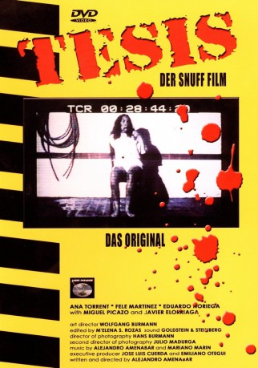

#8816 Faszination des Grauens
Alternativ: Thesis - Tesis (Englischer Titel)
 
 IMDB-Wertung: 7.5 / 10
IMDB-Wertung: 7.5 / 10  Metascore: 0
Metascore: 0 
Angela ist eine Studentin an der Filmhochschule und will ihre Magisterarbeit über das Thema Gewalt im Film schreiben. Bei der Recherche zu ihrem Thema findet sie im Archiv der Universität Videoaufnahmen von Morden an Mitstudentinnen. Über die Videos wird sie mit dem Phänomen von so genannten Snuff-Filmen konfrontiert. Bei ihrer weiteren Recherche erhält sie die Hilfe ihres Studienkollegen Chema, der ein eingefleischter Splatter-Fan ist. Der Horror der Filme überträgt sich langsam auf das reale Leben Angelas. Als Angela sich in den Studenten Bosco verliebt, begeht sie einen verhängnisvollen Fehler...
Jahr: 1996
Dauer: 124 Minuten
FSK: 18
Land: Spanien Studio: Laser ParadiseTonspuren:
Untertitel: Deutsch, Englisch,
Auflösung: 1080p (1920x1032) Größe: 11059 MB
Genre: Thriller, Mystery
Regisseur: Alejandro Amenábar
Drehbuch: Alejandro Amenábar
Soundtrack: Alejandro Amenábar, Mariano Marín
Darsteller:
- Ana Torrent als Ángela
- Fele Martínez als Chema
 Eduardo Noriega als Bosco Herranz
Eduardo Noriega als Bosco Herranz- Xabier Elorriaga als Castro
- Miguel Picazo als Figueroa
- Nieves Herranz als Sena
- Rosa Campillo als Yolanda
- Paco Hernández als Padre Angela
- Rosa Ávila als Madre Angela
- Teresa Castanedo als Presentadora T.V.
- José Miguel Caballero als Conserje Videoteca
- Joserra Cadiñanos als Vigilante
- Julio Vélez als Encargado tren
- Pilar Ortega als Encargada C. Ventas
- Olga Margallo als Vanessa
- José Luis Cuerda als Profesor 1º
- Emiliano Otegui als Profesor 2º
- Walter Prieto als Vigilante Tren
- Florentino Sainz als Anciano
Datei: X:\FSK18-1900-1999\Faszination des Grauens (1996, FSK18, 1920x1032).mkv seit 30.04.2018
Festplatte: FSK18
 Es gibt insgesamt 108 Filme in der Gruppe 'FSK18-1900-1999'
Es gibt insgesamt 108 Filme in der Gruppe 'FSK18-1900-1999'